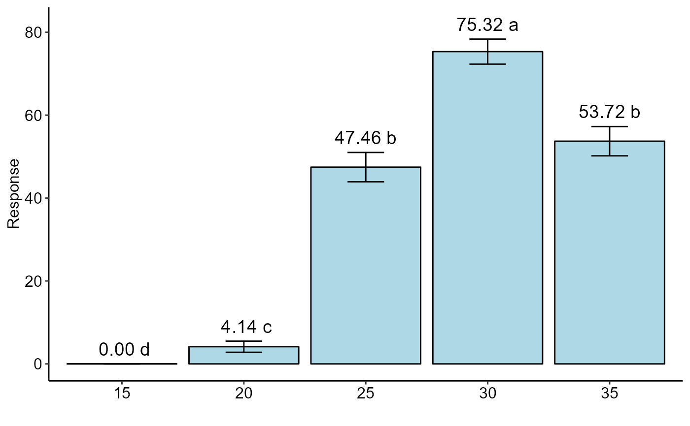

DBC.glm.RdStatistical analysis of experiments conducted in a randomized block design using a generalized linear model. It performs the deviance analysis and the effect is tested by a chi-square test. Multiple comparisons are adjusted by Tukey.
DBC.glm( trat, block, response, glm.family = "binomial", quali = TRUE, alpha.f = 0.05, alpha.t = 0.05, geom = "bar", theme = theme_classic(), sup = NA, ylab = "Response", xlab = "", fill = "lightblue", angle = 0, family = "sans", textsize = 12, dec = 3, addmean = TRUE, errorbar = TRUE, posi = "top", point = "mean_sd", angle.label = 0 )
| trat | Numerical or complex vector with treatments |
|---|---|
| block | Numerical or complex vector with blocks |
| response | Numerical vector containing the response of the experiment. Use cbind(resp, n-resp) for binomial or quasibinomial family. |
| glm.family | distribution family considered (default is binomial) |
| quali | Defines whether the factor is quantitative or qualitative (default is qualitative) |
| alpha.f | Level of significance of the F test (default is 0.05) |
| alpha.t | Significance level of the multiple comparison test (default is 0.05) |
| geom | Graph type (columns, boxes or segments) |
| theme | ggplot2 theme (default is theme_classic()) |
| sup | Number of units above the standard deviation or average bar on the graph |
| ylab | Variable response name (Accepts the expression() function) |
| xlab | Treatments name (Accepts the expression() function) |
| fill | Defines chart color (to generate different colors for different treatments, define fill = "trat") |
| angle | x-axis scale text rotation |
| family | Font family |
| textsize | Font size |
| dec | Number of cells |
| addmean | Plot the average value on the graph (default is TRUE) |
| errorbar | Plot the standard deviation bar on the graph (In the case of a segment and column graph) - default is TRUE |
| posi | Legend position |
| point | Defines whether to plot mean ("mean"), mean with standard deviation ("mean_sd" - default) or mean with standard error (default - "mean_se"). |
| angle.label | label angle |
Gabriel Danilo Shimizu, shimizu@uel.br
Leandro Simoes Azeredo Goncalves
Rodrigo Yudi Palhaci Marubayashi
#> #> #>#> #> #>#> #> #>#> #> #># Assuming the same aristolochia data set, but considering randomized blocks bloco=rep(paste("B",1:16),5) resp=resp/2 DBC.glm(trat,bloco, cbind(resp,50-resp), glm.family="binomial")#> #> #> ----------------------------------------------------------------- #> Analysis of deviance #> ----------------------------------------------------------------- #> #> Null deviance 2159.834 #> Df Null deviance 79.000 #> ----- #> Treatment effects #> Residual deviance 346.688 #> Df residual deviance 75.000 #> p-value(Chisq) 0.000 #> ----- #> Block effects #> Residual deviance 247.739 #> Df residual deviance 60.000 #> p-value(Chisq) 0.000 #> ----- #> AIC 510.227 #> #>#> As the calculated p-value, it is less than the 5% significance level.The hypothesis H0 of equality of means is rejected. Therefore, at least two treatments differ#> #> #> ----------------------------------------------------------------- #> Multiple Comparison Test #> ----------------------------------------------------------------- #> trat prob SE asymp.LCL asymp.UCL .group #> 15 15 0.00 0.00 0.00 0.00 d #> 20 20 0.04 0.01 0.03 0.05 c #> 25 25 0.47 0.02 0.44 0.51 b #> 30 30 0.75 0.02 0.72 0.78 a #> 35 35 0.54 0.02 0.50 0.57 b